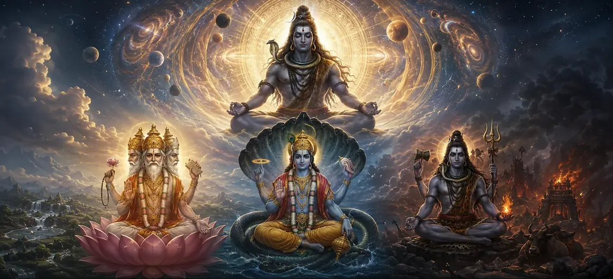

The Lifespans of the Trinity
In Chapter 8 of the Vayaviya Samhita, Lord Vayu unfolds the magnificent cosmic scales that govern the existence of the divine Trinity—Brahma, Vishnu, and Rudra.
While these exalted deities wield extraordinary powers over universal creation, maintenance, and local destruction, their durations are vast yet bounded within the eternal framework of Supreme Shiva.
This profound discourse reveals how all temporal governance eventually dissolves into the timeless infinite of Mahadeva.
Chapter 8 Comprehensive Highlights
Cosmic Durations
Unveiling the expansive lifespans governing cosmic rulers.
Brahma’s Epochs
Measuring the days and years of the creator deity.
Vishnu and Rudra Cycles
Examining the temporal span of preservation and cosmic withdrawal.
Shiva’s Transcendence
Understanding Supreme Shiva as the eternal master beyond the Trinity.
Grand Dissolution
The mechanics of universal withdrawal at the end of cosmic cycles.
Gateway to Creation and Sustenance
Preparing the seeker for exploring foundational cosmic acts in Chapter 9.
Core Topics in This Chapter
- 01The Divine Roles and Limitations of the Trinity→
- 02The Measure of Brahma’s Day, Night, and Lifespan→
- 03The Epochs and Sustaining Power of Lord Vishnu→
- 04The Role of Rudra in Cosmic Withdrawal→
- 05Supreme Shiva as the Source Beyond the Trinity→
- 06The Mechanics of Mahapralaya (Grand Dissolution)→
- 07Relative Time vs. Absolute Eternity→
- 08Shattering the Illusion of Cosmic Permanence→
- 09Pursuing the Imperishable Rather than the Ephemeral→
- 10Transition to the Principles of Creation and Sustenance→
The Divine Roles and Limitations of the Trinity
Lord Vayu explains that Brahma, Vishnu, and Rudra are the primary functional administrators of the phenomenal universe.
Although endowed with immense cosmic potency, their respective offices and durations are determined and sustained by the supreme will of Mahadeva.
Recognizing their temporal nature prevents spiritual delusion regarding worldly existence.
The Measure of Brahma’s Day, Night, and Lifespan
The text details the astronomical scale of Brahma’s existence, where one day of Brahma (a Kalpa) encompasses fourteen manvantaras.
His night equals his day in duration, and his total lifespan spans one hundred divine years of Brahma, after which universal withdrawal occurs.
The Epochs and Sustaining Power of Lord Vishnu
Lord Vishnu presides over the preservation and protection of cosmic order across countless epochs and avataric descents.
His sustaining grace maintains the moral and physical balance of the worlds until the time of dissolution arrives.
The Role of Rudra in Cosmic Withdrawal
Rudra acts as the cosmic agent of dissolution, breaking down exhausted forms so that creation can be renewed.
This transformative dissolution is not an act of destruction born of anger, but a merciful reclamation into peace.
Supreme Shiva as the Source Beyond the Trinity
Above the Trinity stands Para Shiva—the formless, eternal consciousness from whom Brahma, Vishnu, and Rudra emanate.
While the Trinity operates within time, Shiva is the absolute master of time, untouched by birth, aging, or dissolution.
The Mechanics of Mahapralaya (Grand Dissolution)
When the grand cycle concludes, all material elements, cosmic spheres, and deities merge back into their causal seed state.
Nothing remains except Supreme Shiva shining in His unmanifest splendour.
Relative Time vs. Absolute Eternity
The discourse highlights the vast gulf between relative cosmic durations and the unchanging eternity of spiritual liberation.
Realizing this distinction frees seekers from chasing temporary heavenly pleasures.
Shattering the Illusion of Cosmic Permanence
Even celestial worlds lasting trillions of years are ultimately transient within the boundless vision of Shaiva metaphysics.
This understanding directs focus toward attaining union with the imperishable Divine.
Pursuing the Imperishable Rather than the Ephemeral
Lord Vayu exhorts the sages to seek liberation from the wheel of time entirely rather than aspiring for temporary cosmic stations.
True peace is found only in surrender to Supreme Shiva.
Transition to the Principles of Creation and Sustenance
Concluding this monumental exposition on the lifespans of the Trinity, Lord Vayu prepares the ground for exploring the detailed mechanics of creation and sustenance in the next chapter.
Extended Key Teachings of Chapter 8
Bounded Lifespans
Even cosmic creators and maintainers operate within temporal limits.
Brahma’s Scale
Measuring epochs through vast kalpas and manvantaras.
Preservation & Dissolution
Vishnu and Rudra orchestrate cosmic maintenance and withdrawal.
Shiva’s Supremacy
Para Shiva reigns eternally beyond all relative time.
Mahapralaya
Ultimate dissolution merges all manifested worlds back into Shiva.
Gateway to Chapter 9
Prepares the seeker for exploring creation and sustenance next.
Expanded Spiritual Reflection
When we contemplate the immense lifespans of Brahma, Vishnu, and Rudra, human ambitions and anxieties shrink into insignificance. Yet, even these colossal cosmic eras are but fleeting ripples upon the ocean of Supreme Shiva. True liberation lies in uniting with that eternal source rather than seeking fleeting glories within time.
Living the Message of Chapter 8
Cultivate detachment from worldly impermanence by remembering the transient nature of all created things.
Direct your highest devotion toward Supreme Shiva, who alone remains when time itself dissolves.
Approach daily duties with spiritual poise, recognizing that true permanence belongs only to the divine soul.
Detailed Key Spiritual Concepts
The relative temporal spans of Brahma, Vishnu, and Rudra.
The grand dissolution ending cosmic cycles.
The eternal transcendence of Supreme Shiva beyond time.
The cosmic triad of creation, sustenance, and withdrawal.
Contemplating the transient nature of phenomenal existence.
Devotion directed toward the imperishable supreme truth.
Exhaustive Chapter Summary
Vayaviya Samhita Chapter 8 ('The Lifespans of the Trinity') details the vast cosmic durations governing Brahma, Vishnu, and Rudra. By illustrating how even these supreme administrators are bounded by time, the text establishes Supreme Shiva as the eternal, unconditioned source of all existence. This profound chapter prepares the reader to explore the detailed mechanics of 'Creation and Sustenance' in Chapter 9.
Frequently Asked Questions
1. What is the primary theme of Vayaviya Samhita Chapter 8 ('The Lifespans of the Trinity')?
The chapter outlines the grand cosmic durations and lifespans assigned to Brahma, Vishnu, and Rudra, demonstrating how all temporal governance operates under the eternal dominion of Supreme Shiva.
2. How are the lifespans of Brahma, Vishnu, and Rudra measured in this discourse?
The discourse measures their durations through vast scales of kalpas, manvantaras, and divine years, illustrating that even the cosmic creators and maintainers are subject to cyclic time.
3. What happens when Brahma's lifespan concludes?
When Brahma's life cycle completes, a major universal dissolution (Mahapralaya) occurs, wherein all manifested worlds and beings are withdrawn into the unmanifest state.
4. How does Supreme Shiva relate to the Trinity according to this text?
Shiva stands completely beyond the Trinity as the transcendental source, sustainer, and ultimate dissolver of all three deities, remaining untouched by temporal limits.
5. Why is knowing the lifespans of cosmic deities significant for seekers?
It shatters attachments to ephemeral worldly achievements and inspires the seeker to pursue eternal liberation in Para Shiva rather than temporary heavenly realms.
6. What is the next chapter for navigation after this chapter?
The next chapter for navigation is 'Creation and Sustenance'.
“Even the vast lifespans of Brahma, Vishnu, and Rudra are but transient bubbles rising and dissolving within the infinite ocean of Supreme Shiva.”
Continue Through Vayaviya Samhita
Chapter 8 concludes. Continue to the next chapter, Creation and Sustenance.